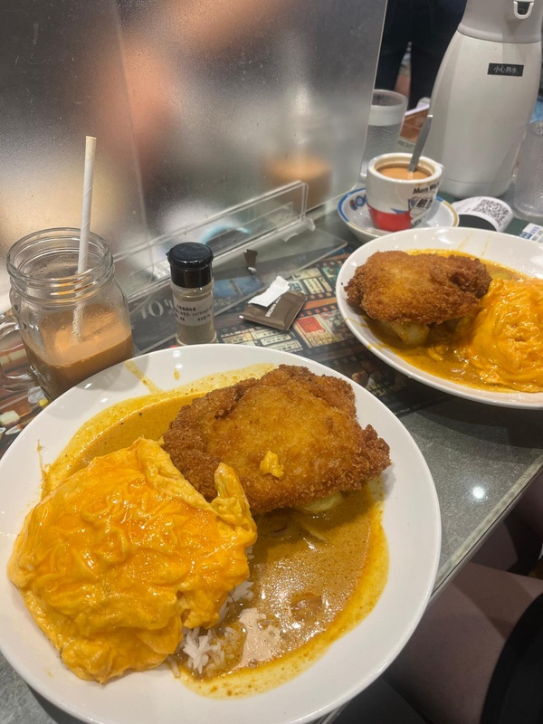
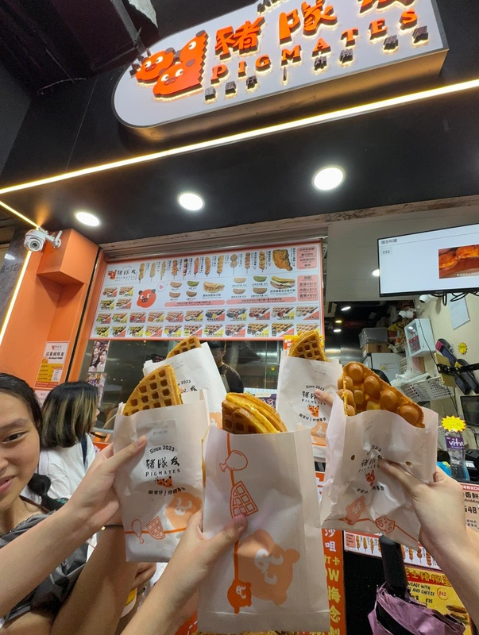

The Student Food Guide to Hong Kong: Eat Well for Under HK$50
Hong Kong has a reputation as an expensive city, but students can eat well for less than HK$50 a meal. The trick is to eat where locals eat: cha chaan tengs, dim sum halls, food courts and street stalls. This guide covers what to order, what it costs, and how to get through a menu with no Cantonese at all.
Prices below are what we paid in 2026 near CityU and in Kowloon. Expect a bit more on Hong Kong Island.
- Cha chaan teng breakfast → The classic Hong Kong student breakfast set, what it costs and what else to try.
- Dim sum for students → How ordering works, a safe first order, what it costs and dim sum etiquette.
- Western food: “soy sauce western” → Baked pork chop rice, tomato borscht and sizzling steak, and where to find them.
- Ordering with zero Cantonese → The system for getting seated, ordering and paying, plus a few useful words.
- Sharing tables etiquette → Strangers will sit across from you while you eat. Here are the unwritten rules.
Hong Kong student budget: what food costs
| Meal | Typical price (HK$) | Where |
|---|---|---|
| Breakfast set | 35–50 | Cha chaan teng |
| Canteen lunch | 35–55 | University canteens |
| Dim sum for two (4 dishes each + tea) | 120–180 total | Dim sum restaurant |
| Baked pork chop rice | 60–80 | Cha chaan teng |
| Street snack (egg waffle, fish balls) | 15–30 | Street stalls |
| Late-night congee | 30–50 | 24-hour congee shops |
Rule of thumb: if a meal costs more than HK$100 and you're not in Central, you're paying for the decor.

Late-night food and street snacks
- Egg waffles (gai daan jai): bubble-shaped waffles, eaten hot from a paper bag.
- Curry fish balls: on a skewer, from street stalls.
- Congee: rice porridge with fish, pork or century egg. Many shops stay open late or 24 hours, which makes them the end point of a night out.
- Dai pai dong: open-air food stalls with plastic stools. Few are left, so try one while you can.

FAQ
- How much does food cost in Hong Kong for students?
- About HK$35–60 per meal if you eat at cha chaan tengs, canteens and food courts. Dim sum for two costs around HK$120–180.
- What is a cha chaan teng?
- A Hong Kong-style diner, or “tea restaurant”, that serves cheap set meals, milk tea and local versions of western dishes.
- Can I order food in Hong Kong without speaking Cantonese?
- Yes. Point at the menu, show a photo, or use Google Lens on Chinese menus. Many restaurants also use QR code ordering.
- What does tapping two fingers on the table mean?
- It's a silent “thank you” when someone pours your tea at dim sum.